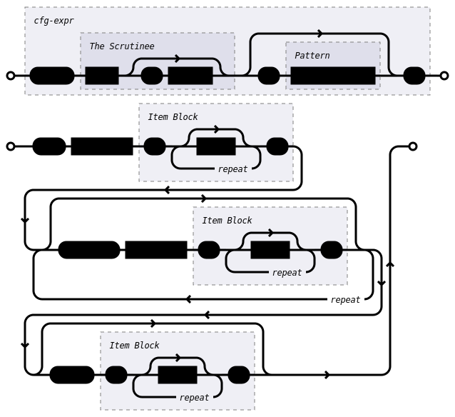

Conditional Compilation
Zngur provides #if {} #else if {} #else {} and #match statements to control
which items in you .zng file are emitted into the final IDL specification.
These statements are both powered by pattern matching.
Note: These statements are an unstable feature, the syntax may change. You need #unstable(cfg_if) and #unstable(cfg_match) to enable them.
The Scrutinee
The only scrutinee type currently available is cfg!(key<.item>)
which can pull single items or groups of items from a Rust/Cargo configuration key.
See Rust's documentation on conditional compilation
for details on what keys exist and what their values are.
cfg!() is analogous to Rust's own #[cfg()] attribute.
If item names contain charters not allowed in a identifier the item can be quoted (i.e. cfg!(feature."float-values")).
Value Sets
To match patterns with value sets use cfg!(key_name). For example cfg!(target_feature) will resolve to a
set of features enabled i.e. ("avx", "avx2" "sse"). If only a single value exists for the key the result will be a single item set
i.e. cfg!(target_os) might be ("linux") or ("windows").
Single Items
To test the presence of a single item in a key you can use dot notation. cfg!(target_os.linux) will resolve to a Some or None value.
Patterns
The pattern syntax available to match configuration values is diagrammed below.
To summarize:
- Use literals
SomeorNone, to match the presence of a key.value likecfg!(target_arch.32 = Some). - Use literals
"string"(i.e."avx"or"32") orusize(i.e.32or64) to test if the value is present in the set of values returned from a key likecfg!(target_arch). - Use
!to negate an expression. - Use
&to combine expressions with a logical And. - Use
|to combine expressions with a logical Or, - Use
()to delimit sub expressions.

If Statements

Example
#unstable(cfg_if)
// test if "foo" is in the `feature` set
#if cfg!(feature."foo") {
type crate::Foo {
#layout(size = 1, align = 1);
}
} #else {
type crate::Bar {
#layout(size = 1, align = 1);
}
}
As a special case, leaving out the = pattern section of an
#if or #else if statement is equivalent to writing = Some.
The following are equivalent:
#if cfg!(feature."float-values" = Some) {
// ...
}
#if cfg!(feature."float-values") {
// ...
}
Yow can combine conditions just like in rust
#if cfg!(feature.foo) && cfg!(target_pointer_width = 32) {
type crate::Foo32 {
#layout(size = 1, align = 1);
}
} #else if cfg!(feature.foo = None) && cfg!(target_pointer_width = 64) {
type crate::NoFoo64 {
#layout(size = 1, align = 1);
}
} #else if (cfg!(feature.foo = Some) && cfg!(target_pointer_width = 64)) || cfg!(feature.baz) {
type crate::Foo64_OrBaz {
#layout(size = 1, align = 1);
}
} #else {
type crate::SpecialFoo {
#layout(size = 1, align = 1);
}
}
Match Statements

Example
#unstable(cfg_match)
#match cfg!(feature) {
"bar" | "zigza" => type crate::BarZigZa {
#layout(size = 1, align = 1);
}
// match two values from a cfg value as a set
"foo" & "baz" => type crate::FooBaz {
#layout(size = 1, align = 1);
}
// negative matching (no feature baz)
"foo" & !"baz" => type crate::FooNoBaz {
#layout(size = 1, align = 1);
}
_ => {
type crate::Zoop {
#layout(size = 1, align = 1);
}
}
}
Matching Multiple Values
Tuples can be used to test multiple conditions at once. i.e.
(cfg!(target_pointer_width), cfg!(target_os)) = (64 | 32, "linux")
// match two cfg keys as a set
#match (cfg!(feature.foo), cfg!(target_pointer_width)) {
(Some, "32") => type crate::Foo32 {
#layout(size = 1, align = 1);
}
(None, 64) => type crate::NoFoo64 {
#layout(size = 1, align = 1);
}
_ => {
type crate::SpecialFoo {
#layout(size = 1, align = 1);
}
}
}